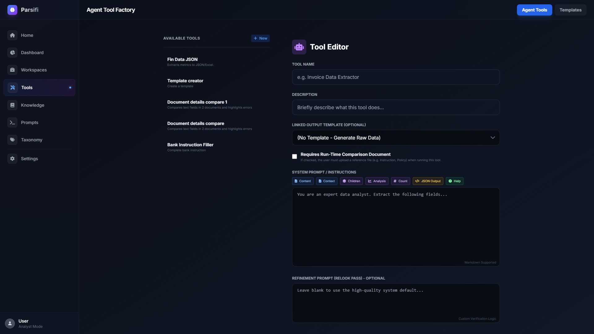

Agent Tool Factory
The Tool Factory lets you build reusable, persistent extraction tools — giving the AI a precise role, structured output rules, and an optional file template to fill in automatically.

Anatomy of a Tool — The 4-Layer Stack
Every Tool is made up of four optional layers that are assembled into the final AI instruction:
| Layer | What it is | Example |
|---|---|---|
| 1. Worker Persona | Tells the AI what role to play. Sets tone, expertise, and constraints. | "You are a Senior Legal Analyst specialising in corporate filings." |
| 2. Task Instructions | The main instruction — exactly what to extract or produce. | "Extract the company name, registered agent, and list of directors." |
| 3. JSON Schema | Defines the exact output fields. When set, the AI returns structured data. | {"company_name": ..., "directors": [...]} |
| 4. Refinement Prompt | An optional second AI pass to clean, verify, or reformat the initial output. | "Remove duplicate entries and standardise date formats." |
JSON Schema — Structured Extraction
The JSON Schema tells the AI exactly which fields to return. Without it, the AI writes a free-form summary. With it, you get reliable, structured data that can flow into spreadsheets, templates, and downstream pipeline steps.
Quick-insert buttons
The schema editor includes three scaffold buttons so you don't need to write JSON by hand:
- + String Field — adds a text field (names, addresses, dates as text)
- + Number Field — adds a numeric field (amounts, counts)
- + List Field — adds an array field (directors, line items, clauses)
If the schema is empty, clicking a button creates a complete minimal schema. If you already have fields, clicking again merges the new field into the existing schema automatically.
Live validation
As you type, the editor shows:
- ✓ Valid JSON — schema is correct
- ✗ Invalid JSON — check for missing quotes, trailing commas, or mismatched braces
Below the indicator, Fields available: lists all top-level field names extracted from the schema. These are exactly the fields that appear as selectable options when you build workspace variable references.
For a full guide to schema types (flat, nested, array) and worked examples, see JSON Schemas.
Strict Mode
Enable Strict Mode when accuracy is critical and invented data is unacceptable — for example, legal documents, financial filings, or regulated forms.
Strict Mode adds an instruction that tells the AI:
"Only extract values explicitly stated in the document. If a value is missing, return null or 'NOT FOUND'. Do not guess, infer, or extrapolate."
| Situation | Strict Mode? |
|---|---|
| Summarising a report for reading | Off — narrative output is expected |
| Extracting invoice amounts for an Excel report | On — numbers must be exact |
| Extracting director names from a legal filing | On — invented names cause compliance issues |
| Generating a narrative business summary | Off — some inference is helpful |
Output Templates
Bind an output template (.xlsx, .docx, or .html) to have Parsifi automatically populate it with extracted data. To set this up:
- Navigate to the Knowledge Base → Templates tab and upload a blank file.
- In your template file, wrap target cells or text in double braces:
{{InvoiceTotal}} - In the Tool editor, select the template from the Output Template dropdown.
- Ensure your JSON Schema has a field named exactly
InvoiceTotal.
When the Tool runs, Parsifi extracts the JSON, maps each field to its matching placeholder, and makes the completed file available for download on the Dashboard.
Context Requirements
Enable Requires Context when a tool needs a comparison document supplied at run time — for example, a "Contract Variance" tool that compares an uploaded contract against a standard Company Policy document.